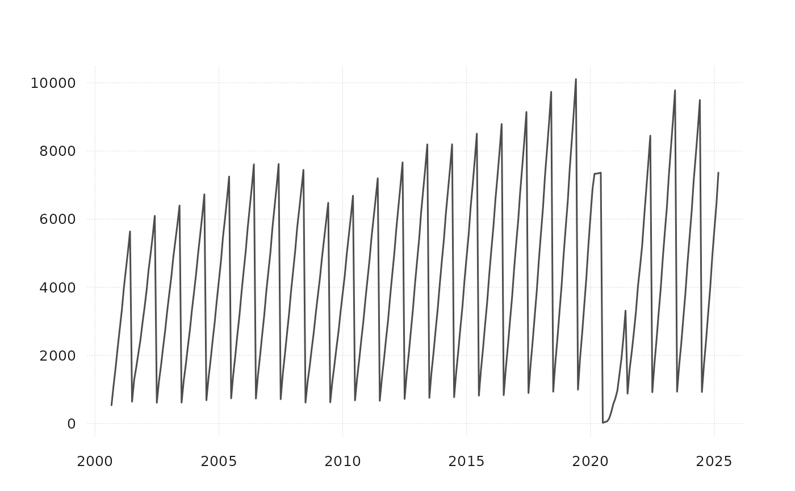

Fiscal year to date sum or average
fytd_cum.RdFiscal year to date sum or average
Details
this function operates similarly to ytd_cum() but assumes that the fiscal year starts in July and accumulates the values from that month onward.
Examples
monthly_data_example |>
fytd_cum()
#> # A tibble: 295 × 4
#> time VISNS_HI VAPNS_HI VADCNS_HI
#> <date> <dbl> <dbl> <dbl>
#> 1 2000-09-01 539. 546. 146.
#> 2 2000-10-01 553. 575. 149.
#> 3 2000-11-01 547. 576. 151.
#> 4 2000-12-01 556. 586. 158.
#> 5 2001-01-01 556. 584. 163.
#> 6 2001-02-01 556. 580. 165.
#> 7 2001-03-01 565. 588. 166.
#> 8 2001-04-01 564. 589. 165.
#> 9 2001-05-01 560. 589. 162.
#> 10 2001-06-01 564. 597. 164.
#> # ℹ 285 more rows
quarterly_data_example |>
fytd_cum()
#> # A tibble: 109 × 31
#> time E_NF_HI ECT_HI EMN_HI EWT_HI ERT_HI E_TRADE_HI E_TU_HI ETWTANS_HI
#> <date> <dbl> <dbl> <dbl> <dbl> <dbl> <dbl> <dbl> <dbl>
#> 1 1998-01-01 531. 23.3 15.9 15.9 65.2 81.0 27.9 9.97
#> 2 1998-04-01 531. 23.1 15.8 15.9 64.9 80.8 27.9 10
#> 3 1998-07-01 533. 23.0 15.8 15.9 64.2 80.1 27.6 10.1
#> 4 1998-10-01 532. 23.0 15.8 16.0 64.2 80.2 27.5 10.1
#> 5 1999-01-01 531. 22.9 15.8 15.9 64.2 80.1 27.3 9.96
#> 6 1999-04-01 532. 22.9 15.8 15.9 64.3 80.2 27.3 9.96
#> 7 1999-07-01 537. 22.9 16.1 15.8 65.1 81.0 27.6 10.2
#> 8 1999-10-01 539. 23.1 16.2 15.9 65.5 81.5 27.7 10.2
#> 9 2000-01-01 541. 23.5 16.2 16.0 65.7 81.7 27.8 10.3
#> 10 2000-04-01 544. 23.9 16.3 16.1 65.8 81.9 27.9 10.4
#> # ℹ 99 more rows
#> # ℹ 22 more variables: ETWNS_HI <dbl>, EUT_HI <dbl>, EIF_HI <dbl>,
#> # EFI_HI <dbl>, E_FIR_HI <dbl>, ERE_HI <dbl>, EPS_HI <dbl>, E_PBS_HI <dbl>,
#> # E_ELSE_HI <dbl>, EMA_HI <dbl>, EAD_HI <dbl>, EED_HI <dbl>, EHC_HI <dbl>,
#> # EAF_HI <dbl>, EAFAC_HI <dbl>, EAFFD_HI <dbl>, EOS_HI <dbl>, EGV_HI <dbl>,
#> # EGVFD_HI <dbl>, EGVST_HI <dbl>, EGVSTEDNS_HI <dbl>, EGVLC_HI <dbl>
monthly_data_example |>
tsbox::ts_long() |>
tsbox::ts_pick("VISNS_HI") |>
tsbox::ts_xts() |>
fytd_cum(avg = FALSE) |>
tsbox::ts_plot()
